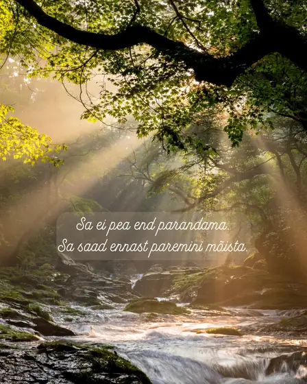
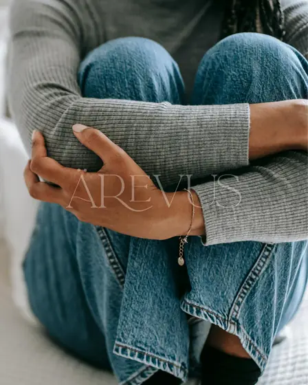

Inspiratsioon
Toetavat lugemist

7. jaanuar 2026
Miks terviklik vaade iseendale muudab elu lihtsamaks?
Miks terviklik vaade iseendale muudab elu lihtsamaks?Holistiline maailmavaade ja inimese kogemus tervikuna Kas oled märganud, et vahel ei piisa ühest …
Loe edasi →
15. oktoober 2025
Ärevus kui teejuht tagasi iseenda juurde
„Sa ei saa peatada laineid, kuid saad õppida surfama.“Jon Kabat-Zinn Mõnikord hakkab süda kloppima ilma nähtava põhjuseta. Käed lähevad külmaks, hinga…
Loe edasi →30. detsember 2024
Kas terapeut on eriline inimene?
Terapeut on elus märkimisväärselt palju kogenud, sealhulgas nii valu, väljakutseid ja läbikukkumisi kui ka edu, rõõmu ja vabanemisi. Mida laiem spekte…
Loe edasi →25. september 2024
Lihtsad vaprad valikud
Täna on levinud arusaam, et enda eest hoolitsemine on igaühe baasiline vajadus ja samuti kohustus. Me õpime seda ning leiutame kui jalgratast, sest ol…
Loe edasi →23. september 2024
Miks mõtlemisest üksi ei piisa?
Analüüsivõime, oskus infot vastu võtta, töödelda ja kasutada on inimeseksolemise üks suuri erilisi võimeid ja tänapäeva ühiskonnas ka möödapääsmatult …
Loe edasi →21. juuli 2024
Mida kogeb kõige olulisem inimene?
Elus on üks oluline aeg – see on periood, mil uurida, „mis juhtus”, enne kui edasi minna. Näiteks, miks suhe purunes või tööl on probleemid, miks terv…
Loe edasi →8. juuli 2024
Sina ise oled enda guru
Kes teab sinu vajadusi? Kes teab sinu unistusi? Kes teab sinu andeid ja võimeid? Kes teab sinu tõde? Albumil “Kuu lõhn” laulab Siiri Sisask: Inimesed …
Loe edasi →17. juuni 2024
Kas tunned, et elad elusalt ja ausalt?
Inimesed elavad oma päevi, lükates edasi seda, mida tegelikult oluliseks peavad: parimad riided ootavad seda õiget sündmust, hobi ootab aega, mil on „…
Loe edasi →10. juuli 2020
Andestamisest
Olen märganud, et inimestel on andestamisest väga erinevad arusaamised. Pidevalt soovitatakse üksteisele andestada (noh, vahel soovitatakse ka kätte m…
Loe edasi →